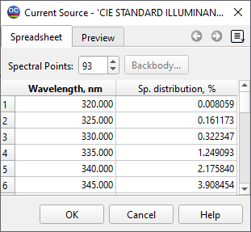
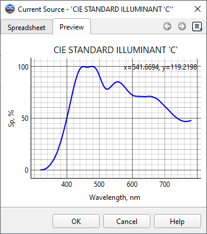

Light Source/Detector Database
Light Source and Detector databases are used for the storage of spectral power distributions of light sources and detectors. Currently, light sources and detectors are used in the Color Evaluation option of OptiChar. They can be optionally used during computations of transmittances and reflectances of a coating. See the Source/Detector page of the General Configuration dialog.
Using the Light Source/Detector window, you can specify a spectral distribution of a light source. Light source power distributions are defined by relative intensities at different wavelengths.
When the Spreadsheet tab is active, the field Spectral points in the upper part of the window is used to specify the number of spectral points at which light source data are to be entered. The lower part of the window provides a spreadsheet format for the entry/editing of data. Here, wavelength values and corresponding spectral power values are to be entered.

Set a necessary number of Spectral points in the edit field at the top of the window.
Enter desired values manually or use the Spreadsheet Editing Tools to modify data.
The button Blackbody… enables the user to create a light source with a spectrum corresponding to the spectrum of a blackbody with a given temperature (K). The spectrum is normalized (the highest intensity is equal to 100%).
The button Normalize allows the user to transform an arbitrary spectrum so that the maximum value of the spectral distribution is equal to 100%.
The Preview tab enables the user to observe spectral characteristics of light source data.

Note: In the Catalog, it is possible to find data files for several standard light sources and detectors.